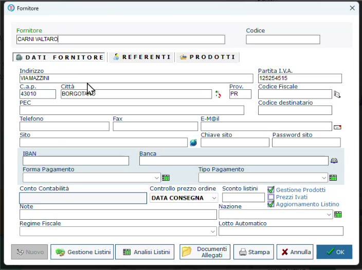
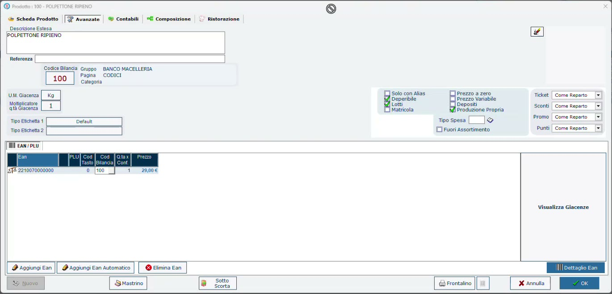
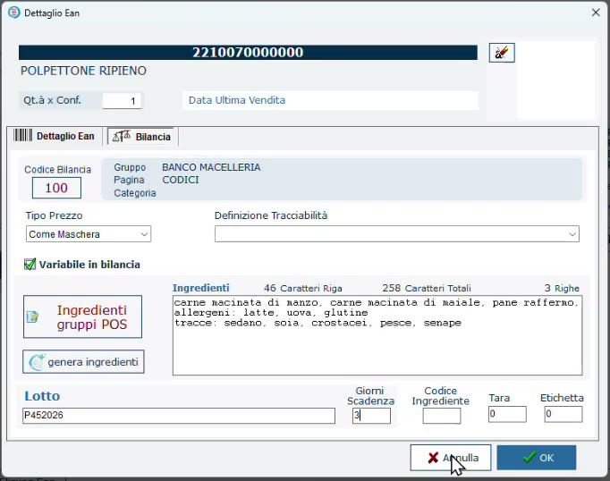

Prodotto finito e ingredienti
Obiettivo
Preparare le anagrafiche necessarie a una trasformazione di gastronomia: il fornitore, il prodotto finito (nell'esempio un polpettone ripieno) e gli ingredienti, distinguendo correttamente gli uni dagli altri.
Prerequisiti
- HyperStore con il modulo LiveRetail (necessario per lavorare con le bilance).
- Banco e bilancia configurati (Banchi e bilance in HyperStore).
Perché tracciare i preparati
Molte macellerie si stanno spostando verso il prodotto trasformato: sughi, polpette, polpettoni. Materia prima e ingredienti di cucina diventano un prodotto nuovo, che richiede a sua volta una tracciabilità.
La normativa vuole che si sia sempre in grado di ricostruire con quale lotto di ogni ingrediente è stato fatto un preparato: quale lotto di uova, quale lotto di macinato, perfino quale lotto di sale. Se un ingrediente dà un problema, bisogna poter risalire ai prodotti in cui è finito.
Un obbligo, non una scelta
I controlli HACCP avvengono comunque. Oggi molti esercenti fanno questo lavoro a mano, compilando le schede di produzione; con il programma la rintracciabilità è reale e nasce durante il lavoro.
Passaggi
1. Il fornitore
In Anagrafiche → Fornitori crea il fornitore da cui acquisti gli ingredienti. Nella scheda attiva:
- Gestione Prodotti;
- Aggiornamento Listino.

Le due opzioni da attivare sono in basso a destra nella scheda Dati fornitore.
2. Il prodotto finito
- In Prodotti crea l'articolo, per esempio POLPETTONE RIPIENO, nel reparto dei preparati.
- Imposta la vendita a peso (unità di misura Kg) e il prezzo al chilo sul listino base.
- Assegna il codice bilancia (nell'esempio 100) e crea l'EAN con Aggiungi Ean Automatico.
- Nella scheda Avanzate attiva Deperibile, Lotti e Produzione Propria: è un trasformato creato in negozio.

Scheda Avanzate del prodotto finito.
3. Ingredienti in etichetta e giorni di scadenza
- Seleziona l'EAN e premi Dettaglio Ean, poi apri la scheda Bilancia.
- Con genera ingredienti l'intelligenza artificiale propone l'elenco degli ingredienti del prodotto. È un suggerimento: correggi ciò che non corrisponde alla tua ricetta.
- In Giorni Scadenza indica per quanti giorni il prodotto può restare nel banco (nell'esempio 3).

Gli ingredienti proposti e i giorni di scadenza: sono i dati che finiranno in etichetta.
Controlla sempre il testo generato
L'elenco proposto è un suggerimento: nell'esempio la frutta a guscio proposta nella ricetta non c'è, e il testo si può modificare in qualsiasi momento. Ingredienti e allergeni in etichetta devono corrispondere al prodotto reale.
Il testo degli ingredienti è quello che comparirà sull'etichetta del preparato; i giorni di scadenza vengono usati per calcolare la scadenza a ogni produzione.
4. Gli ingredienti
Gli ingredienti (pangrattato, sale, uova, formaggio grattugiato) sono articoli come gli altri, con alcune differenze rispetto al prodotto finito:
| Impostazione | Prodotto finito | Ingrediente |
|---|---|---|
| Listino di vendita | Sì: si vende al banco | Non necessario: il macellaio non lo rivende da solo |
| Deperibile e Lotti (Avanzate) | Attivi | Attivi |
| Produzione Propria (Avanzate) | Attivo | Non attivo |
| Composizione | Prodotto finito | Componente di un altro prodotto |
| Unità di misura | Kg | Kg oppure pezzi (per esempio le uova) |
Un ingrediente può anche essere venduto
Nulla vieta che un ingrediente sia destinato anche alla vendita diretta: può avere una doppia funzione. Resta comunque un componente, ed è questo che lo rende utilizzabile nelle ricette.
Verifica
- Il prodotto finito ha Deperibile, Lotti e Produzione Propria attivi.
- Ogni ingrediente ha Deperibile e Lotti attivi ed è indicato come componente.
Errori comuni
| Problema | Causa probabile | Rimedio |
|---|---|---|
| La trasformazione non chiede il lotto del prodotto finito | Lotti non attivo sul prodotto di destinazione | Attiva la gestione dei lotti nella scheda Avanzate |
Il passo successivo è caricare gli ingredienti con i loro lotti: Carico degli ingredienti da CSV.